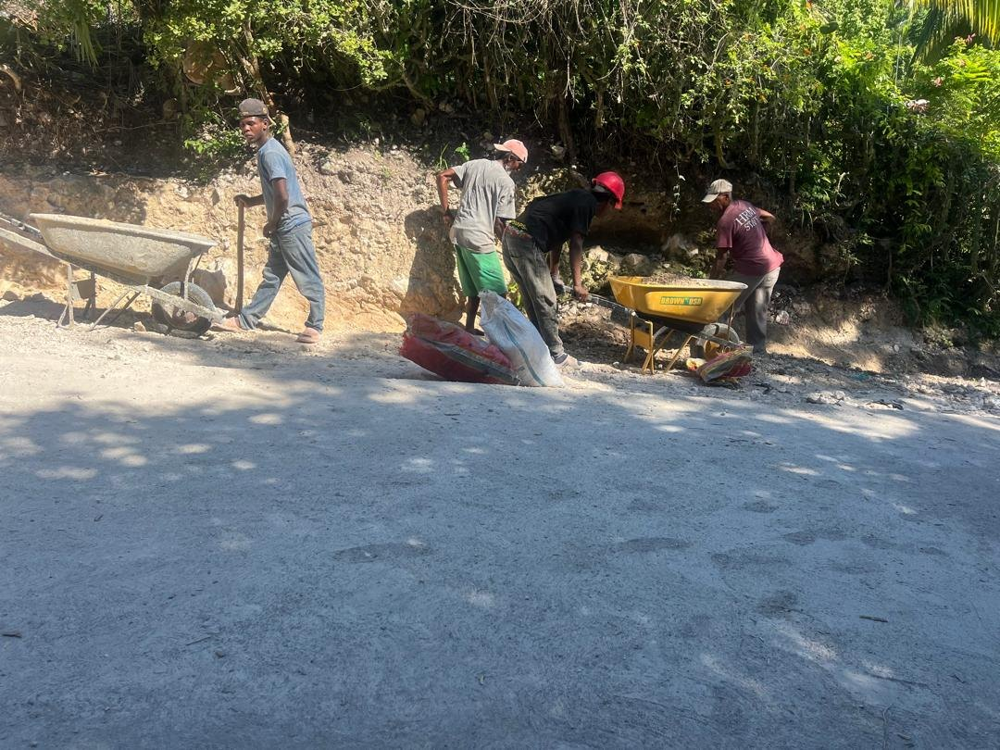

Ale nan kontni an

Faz 1 · Mòn Chamit · 21 novanm 2026
Labalèn, Ayiti
Ann bati Labalèn ansanm.
Moun nan kominote a ak fanmi nan dyaspora a mete men ansanm pou amelyore lavi chak jou, dapre priyorite moun k ap viv Labalèn.
Dekouvri KPL
Kote fanmi nou soti
Labalèn se lakay moun k ap viv la jodi a. Li fè pati istwa anpil fanmi k ap viv aletranje tou. Konbit Pou Labalèn sèvi ak lyen sa yo pou ede amelyore lavi chak jou nan kominote a.
Aprann sou Labalèn ak KPL
Gade pyebwa rasin fanmi yo an gran
Wout pou Labalèn
Swiv travay nan Mòn Chamit epi gade sa ki prevwa toupre lekòl la.
Pwojè nou yo
Faz 1 · Mòn Chamit
Ou ka patisipe kèlkeswa kote w ye
Si paran w oswa granparan w soti Labalèn, ou ka pote talan w, istwa fanmi w ak kontak ou genyen deja.
Patisipe
Men anpil,
Foto anvan an
Pwochen foto

 Gade pyebwa rasin fanmi yo an gran
Gade pyebwa rasin fanmi yo an gran